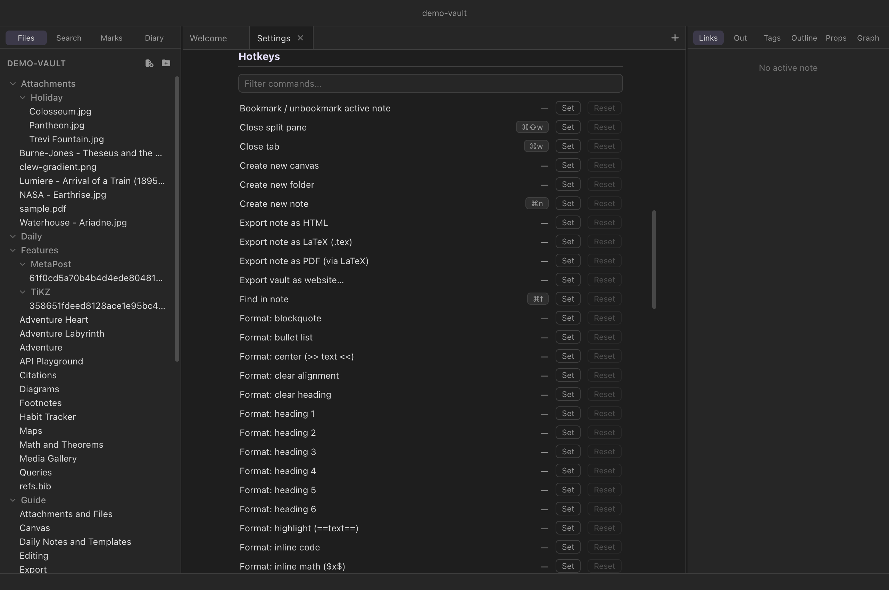

Reference
Settings and hotkeys
Clew keeps its configuration small and legible: a handful of app-wide preferences, a handful of per-vault switches, and a hotkey editor that can rebind any command. This chapter is the reference for all of it — every settings section as it appears in the app, the difference between app-global and per-vault settings and where each lives on disk, how rebinding works, and the complete table of default hotkeys.
The settings tab
Press ⌘, (or Clew → Settings… on macOS, File → Settings… on Windows and Linux) and settings open as a tab in the workspace, not a floating dialog. It is a singleton: if a settings tab is already open anywhere — even in another split pane — the command focuses it rather than opening a second. Being a tab, it closes with ⌘W like anything else, and can sit in a split beside a note while you experiment. Every change applies immediately; there is no Save button.


App-global versus per-vault
Clew has exactly two configuration scopes, and the settings tab shows both:
- App-global settings — everything in the
Appearance, Diary, Files, and Hotkeys sections — apply to every vault
and are stored in
clew-settings.jsonin the operating system's per-user application-data directory (alongside them, Clew keeps its recent-vaults list and the set of windows to restore at launch). Nothing app-global is written into any vault. - Per-vault settings — the This vault
section — are stored in
.clew/vault-settings.jsoninside the vault itself, so they travel with it: clone or sync the vault and its behaviour comes along.
One section, TeX fragments, has a list in each scope: fragments you keep on this machine and fragments a vault carries with it, with the vault's winning where both use a name.
The settings sections
Appearance
- Theme
- Dark or light. See Theming and CSS snippets for what the switch reaches and how to restyle further.
- New note tabs open in
- Whether a freshly opened note tab starts in source mode, live edit, or reading mode. Navigating an existing tab keeps that tab's current mode; this setting governs new tabs only.
- Explorer click opens files
- Whether clicking a file in the explorer opens it in a new tab, or in the current tab, Obsidian-style.
- Editor font size (px)
- 10–28, default 16. Applies live to every editor.
- Editor line width (em)
- 20–120, default 44 — the measure of the editing column.
- Fill column (hard-wrap)
- 40–120, default 72 — the column Fill paragraph (⌥Q) and auto-fill hard-wrap prose to. See Hard-wrapping paragraphs.
- Link previews on hover
- Always by default (
linkPreview:hover); With ⌘ held (mod; Ctrl off the Mac) or Off (off). What hovering a link shows: link previews. - Footnotes in the margin (sidenotes)
sidenotes:auto(the default — a pane at least 960 px wide with room to the right of the text),onoroff. See sidenotes.- The graph's References switch
- Off by default (
graphReferences): cited works as nodes in the graph, set by the switch on the graph itself. - Live preview of maths and diagrams while editing
- On by default (
previewPane:on|off): the rendering of the formula or diagram the cursor is in, beside it (the live rendering). - Auto-fill while typing
- Off by default. Emacs'
auto-fill-mode: typing a space past the fill column breaks the line behind the cursor. Applies live — no restart, no reopening tabs. - PDF paper size (reading-view export)
- A4 (default), US Letter, Legal or Tabloid — the paper Export as PDF (reading view) prints onto. The LaTeX PDF takes its page size from the document's own class instead, and is not affected.
- LaTeX engine (PDF via LaTeX export)
(latexEngine) - Automatic (default), pdfLaTeX, LuaLaTeX or XeLaTeX — what compiles
Export as PDF (via LaTeX).
Automatic reads the exported document: one that loads
fontspec,unicode-mathorpolyglossia, or runs Lua code, takes LuaLaTeX; one that needs a XeTeX-only package, XeLaTeX; anything else, pdfLaTeX. (Not in 0.12.0.) - Shell panel font
(shellFont) - Blank by default, which uses Clew's monospace font. A family — or a CSS list of them — for the shell panel, placed before Clew's own; applies at once. Powerline and Nerd Font prompt symbols come from such a font either way, if one is installed.
Live edit
App-global; see Live edit and the toolbar. Changes apply to open notes at once.
- ⌘E returns from reading mode to
- Source mode (default) or live edit — for a tab that has not been
edited yet. A tab that has remembers its own
(
defaultEditMode). - Reveal syntax for
- The construct under the cursor (default) or the whole line
(
liveReveal:construct|line). - Typeset math in place
- On by default (
liveRenderMath); off leaves maths as source. - Render diagram and query fences in place
- On by default (
liveRenderFences): mermaid, the TeX figures, maps, queries, Dataview, Bases and rich directives as engine frames. Off leaves them as code. - Render embeds and media in place
- On by default (
liveRenderEmbeds): note, PDF, office, canvas and media embeds,@reveal, and HTML blocks with custom elements. - Rendered blocks kept alive (advanced)
- 4–64, default 16 (
liveFrameCap) — how many engine frames one note keeps at once. Each costs memory (roughly 20 MB).
Editor toolbar
- Show the toolbar
- In live edit (default), in live edit and source mode, or never
(
editorToolbar:live|always|never). View → Editor Toolbar toggles it and remembers which of the first two it was (editorToolbarPrev). It governs the formatting toolbar only: the mode switch sits in each pane's tab strip whatever it says. (In 0.12.0 the switch was part of the toolbar, and source mode with the toolbar hidden had none.) - Selection bubble over selected text
- On by default (
selectionBubble). - // menu: type // for the Format menu
- On by default (
slashCommands). Two slashes at the start of a line or after a space open the Format menu at the cursor, in source mode and live edit (the // menu). - Groups, in order
- Tick the groups to show and order them with ▲▼; Reset
restores the default (
editorToolbarGroups, null meaning the default). The mode switch is not one of the groups: it is in the tab strip.
Diary
- Mode
- One note per day or Single log note — the two shapes a diary can take (see Daily notes and the diary).
- Log note (log mode)
- The note holding the whole diary in log mode; default
Diary.md. - Folder (per-day mode)
- Where daily notes are created; default
Daily. - Date format
- The file-name pattern for daily notes; default
YYYY-MM-DD. - Template note (optional)
- A note whose contents seed each new daily note.
PDF viewer
- Chinese, Japanese and Korean fonts
(pdfCjkFonts) - A PDF that uses CJK text without embedding its own fonts needs the reader to supply them. The four Noto packs are 139 MB — too much to put in every installer for the minority who need them, and not something to fetch mid-render — so they are downloaded once, on this button, and kept locally from then on. Nothing is fetched from the network while you read. The button becomes Remove once they are installed, which reclaims the disk.
Office documents
- LibreOffice engine
- The 51 MB engine behind office tabs, downloaded once on this button and verified against checksums pinned in the app. The same offer appears in the tab the first time an office document is opened; the button becomes Remove once installed. There is no settings key — whether the engine is on disk is the switch.
Files
- Attachment folder
- Where pasted and dropped files land; default
Attachments(see Attachments and files). - Templates folder
- Where Insert template… (⌘⌥T) looks for
templates; default
Templates.
Callouts
Callout types of your own, used as > [!name] like the
built-in ones — each a name, a title, a Font Awesome icon, a colour and
aliases, with a preview in both themes. There are two lists:
Global, kept in clew-settings.json
(callouts) and offered in every vault on this machine, and
This vault, kept in the vault's
.clew/vault-settings.json (callouts) and
travelling with it. They merge field by field over the built-in types —
built-in, then global, then vault — so a row named like a built-in
changes that one. A row Clew cannot use says why and is skipped. The full
account is in Callouts. (Not in
0.12.0.)
TeX fragments
Named preamble text for the figures Clew typesets — the macros, colours
and packages your ```latex, ```tex and
```tikz blocks share. Each row is a name and an editor;
a figure asks for what it needs by name on its opening line
(clew-fragments='math macros, colours'), and the text is
inserted into that figure's preamble. There are two lists:
Global, kept in clew-settings.json and offered in
every vault on this machine, and This vault, kept in
the vault's .clew/vault-settings.json and travelling with
it. A vault fragment shadows a global one of the same name, and the row
says so. Editing a fragment re-typesets the figures that use it. The
full account, including where the text lands in each kind of block and
what happens to a name nothing defines, is in
Diagrams.
Updates
Check for updates once a day
(updateCheck) — On (the default) or Off. Clew asks
clew-app.com whether a newer version exists and, if one does, says so in
a notice — Clew 0.12.2 is available. — with
What's new, Download, Skip
this version and ×. Nothing is sent but the
request itself, and nothing is downloaded or installed for you.
Help → Check for Updates… asks at any time,
whatever this says, and always answers — up to date, a newer version,
or why it could not check. A development build, run from source, never
checks. See Keeping up to
date. (Not in 0.12.0.)
This vault
The per-vault settings, stored in
.clew/vault-settings.json — eleven switches and fields,
plus lists: plugins, TeX fragments, callout types (not in 0.12.0) and the
two exclusion lists:
- Note history
(history) - On by default: before a save displaces an existing note or
canvas, the old text is snapshotted into
.clew/history/, with sensible rate-limiting and pruning. The switch stores a boolean; finer tuning is a hand-edited object. Clew for iOS reads the same key, so a synced vault keeps or stops history on every device. See Note history. - jmarkdown project
(jmarkdownProject) - For vaults that are jmarkdown manuscripts — a book folder, say.
Re-enables the engine's own-line
[[file.md]]inclusion, so reading mode transcludes chapters exactly the way the jmarkdown command-line build does. The trade-off: a wikilink alone on its own line stops being a plain link while this is on. Open previews re-render as soon as the box is toggled. - Standard Markdown syntax
(normalSyntax) - Disables the jmarkdown inline dialect, so
*italic*and**bold**behave as they do everywhere else, while keeping math, citations, diagrams, and theorems. Renders and exports both honour it; the editor's dialect highlighting does not adapt yet. See The jmarkdown dialect. - Note API
(noteApi) - Gives
<script>elements in rendered notes awindow.clewAPI — open notes, search, read and write notes and frontmatter, run commands, share state — in a vault this device trusts. Off by default, deliberately: with it on, notes are code. The switch is kept on this device; the vault's key is only its request (below). See The Note API. - Bibliography file
(bibliography) - A
.bibfile — a path from the vault root, or an absolute path — that every note in the vault resolves\citecommands against, with citation resolution switched on — in its exports too. A note's ownBibliography:adds to it, its entry winning a key that is in both;Bibliography mode: replaceuses the note's alone (in 0.12.0 a note's file replaces it, and an export ignores the vault's file). See Citations and bibliographies. - Bibliography style
(bibliographyStyle) - The vault's citation style: a name the engine ships (apa,
chicago, harvard1, vancouver, bjps, ajp, econometrica, ergo) or a
path to a custom
.cslfile. Notes override with aBibliography style:property. - References panel
(bibliographyPanel) - Turns on the Refs panel's This note mode: the active note's formatted references, even while the note is in source mode. The panel's Library is there regardless.
- New drawings are saved as
(excalidrawFormat) - Empty or
markdownfor Obsidian's.excalidraw.md;jsonfor a plain.excalidraw. Clew reads and indexes both identically — the choice only matters to Obsidian, which can index a drawing solely through the markdown wrapper. See Drawings. - Pandoc citations
(pandocCitations) - Reads
[@key]and@keyas citations alongside the\citecommands — the style Zotero and Better BibTeX export, and what a vault written for pandoc will be full of. Off by default, and worth understanding why:@is jmarkdown's directive sigil, so with this on a bare@wordthat is not a registered directive is read as a citation key — an email address or an @mention in prose will change how it renders. See Citations. - Run dataviewjs blocks
(dataviewJs) - Off by default. Obsidian's
```dataviewjsblocks are JavaScript rather than queries, so this is per vault and off until you turn it on for a vault you wrote or trust; plain```dataviewqueries always run. Like the Note API it is kept on this device and works only in a trusted vault (below). See Queries. - TeX fragments
(texFragments) - Named preamble text this vault's figures can ask for by name, travelling with the vault — Diagrams → Fragments.
- Listed but not indexed
(unindexed) - Folders that stay in the explorer and open normally, but are not indexed and not watched: no backlinks, tags, search hits or quick-switcher entries, and no automatic refresh when another program writes to them. One pattern per line — Telling Clew to leave a folder alone.
- Hidden entirely
(hidden) - Folders treated as though they were not in the vault at all: not listed, not indexed, not watched, not published by a website export. Same patterns.
- Plugins
(plugins) - Below the switches, every plugin available here is listed with
its version, surfaces, and whether it came from this vault's
.clew/plugins/or the global plugin folder (installed once, offered in every vault — there is a button to open it). Each has its own enable checkbox: installing may be global, but enabling is per vault, on this device, and the vault's array of plugin ids is only its request. A vault's own plugins run only while it is trusted, and are greyed while it is not; your global ones run wherever you enable them. A plugin is arbitrary code — enable only what you trust. See Vault plugins. - Apps
- A subsection of its own, below the plugins: each app the vault carries, what this device lets it do, and Revoke, which forgets the app's answers here so that it asks again — or, in a vault with none, No apps in this vault. Kept on this device, not in the vault. See Apps in notes. (Not in 0.12.0.)
The first rows on this page are not stored in the vault at all. They
are this device's answer about the vault's code, kept in Clew's own
data, so a vault cannot arrive trusting itself:
Trusted on this device: this vault may run its code;
Vault scripts: run .clew/scripts in every note;
Note API and Run dataviewjs blocks in this
vault, described above; and Network: let this vault's
scripts reach other hosts. While the vault is restricted they are all off and
greyed. Changing the trust, the scripts or the network reloads the
window. See Trusting a vault. (In
0.12.0 the one device row reads Trusted on this device: notes may
run code and covers only the code a note asks the engine to run;
the Note API, dataviewjs and plugins are switched on by the
keys in the vault.)
vault-settings.json —
noteApi, dataviewJs, network,
plugins — say what the vault asks for, and only this
device's switches grant it. Turning a switch on or off writes the key
back as the vault's request, so a vault you share goes on asking for
what you gave it. In 0.12.0 the keys are the switches themselves, so a
vault you receive can arrive with its plugins, the Note API and
dataviewjs already on: read it before you open it.
Trusted vaults
Every vault this device has decided about, newest first: the folder's name ((open) when a window has it, — not on disk when it is gone), Trusted, Restricted or Not decided, and two buttons. Revoke makes a vault restricted and keeps its switches for a later Trust; Forget removes the record, so the next opening asks again. A vault open in a window reloads. See Trusting a vault. (Not in 0.12.0.)
The hotkey editor
The final settings section lists every command Clew has — built-ins, all the formatting commands, and commands registered by enabled plugins — alphabetically, with a filter field at the top. Each row shows the command's current binding (a dash when unbound), a Set button, and a Reset button.
To rebind: filter to the command, press Set, and type the new chord — the row shows Press a shortcut… until you do (Esc cancels). The chord must include a modifier; the first full chord you press becomes the command's binding, replacing its defaults. Custom bindings are marked with an accent-coloured key cap, and Reset — enabled only on customized rows — restores the default. When the same chord is claimed by more than one command, both rows show it in red, and you should re-bind one of them: which command wins an ambiguous chord is not defined.
Overrides are stored (app-globally, keyed by command id) in
clew-settings.json, so your keymap follows you across
vaults. The command palette always
displays current bindings, and the native menus do too: menu
accelerators are display-only — Clew's own dispatcher handles every
chord — so a rebound command shows its new chord in the menu and the
old chord does nothing.
Chord notation
Internally, chords use CodeMirror's notation — Mod-Shift-p,
Mod-Alt-ArrowLeft — where Mod is the platform
command key: ⌘ on macOS, Ctrl on Windows and
Linux. On macOS, Control is a separate modifier of its own
(⌃), used for tab cycling because ⌘Tab belongs to
the system; away from macOS such chords fold into the Ctrl key, so
⌃Tab reads as Ctrl+Tab everywhere. You never type this
notation — the editor records chords from real keystrokes — but it is
what appears in the settings file.
Default hotkeys — the complete table
Every default binding in Clew, grouped by area. This is the complete list: any command not shown here ships unbound and is reachable through the command palette, the menus, or a binding of your own. Shortcuts are shown in macOS notation — on Windows and Linux, read ⌘ as Ctrl and ⌥ as Alt.
Files
| Hotkey | Command |
|---|---|
| ⌘N | Create new note |
| ⌘S | Save note (auto-save runs anyway; this flushes immediately) |
Navigation
| Hotkey | Command |
|---|---|
| ⌘O | Open quick switcher |
| ⌘P | Open command palette |
| ⌘[ (also ⌘⌥←) | Navigate back |
| ⌘] (also ⌘⌥→) | Navigate forward |
| ⌘G | Open graph view — except on a canvas tab, where ⌘G groups the selected nodes instead (the binding every drawing app uses); the graph stays reachable from the palette and the Go menu |
| ⌘⇧F | Search in all files |
| ⌘⇧D | Open today's diary entry |
Tabs and splits
| Hotkey | Command |
|---|---|
| ⌘T | New tab |
| ⌘W | Close tab |
| ⌃Tab | Next tab |
| ⌃⇧Tab | Previous tab |
| ⌘1 … ⌘8 | Go to tab 1–8 (not in 0.12.0) |
| ⌘9 | Go to last tab (not in 0.12.0) |
| ⌘\ | Split right |
| ⌘⇧\ | Split down |
| ⌘⇧W | Close current pane |
View and panels
| Hotkey | Command |
|---|---|
| ⌘E | Toggle reading mode (returns to the tab's editing mode) |
| ⌘⇧E | Toggle live edit / source |
| ⌥⇧T | Focus the editor toolbar |
| ⌘⌥B | Toggle left sidebar |
| ⌘⌥⇧B | Toggle right sidebar |
| ⌃` | Toggle the shell panel (and put the caret in it) |
| ⌘, | Open settings |
Editing
| Hotkey | Command |
|---|---|
| ⌘F | Find in note |
| ⌘K | Insert wikilink (wraps the selection, or opens completion) |
| ⌘B / ⌘⇧B | Strong *text* / intense **text** (bold / ** under standard Markdown) |
| ⌘I | Italic /text/ (*text* under standard Markdown) |
| ⌘U | Underline __text__ |
| ⌘⇧H | Highlight ==text== |
| ⌘⇧X | Strikethrough ~text~ |
| ⌘⇧C | Inline code |
| ⌘⇧M | Inline maths $x$ |
| ⌘⌥↓ / ⌘⌥↑ | Subscript _{text} / superscript ^{text} |
| ⌘⌥T | Insert template… |
| ⌥Q | Fill paragraph (hard-wrap to the fill column); also Edit → Fill Paragraph (Reflow) |
| ⌥D | Delete word forward — the forward twin of the Mac's own ⌥⌫ |
| ⌘Enter | Toggle the task on the cursor's line (elsewhere: CodeMirror's own blank line below) |
| ⌘⌥Q | Quote the PDF selection in the note being written (Quoting a passage; not in 0.12.0) |
Native menu shortcuts
Two shortcuts are native menu items rather than commands, so they do not appear in the hotkey editor and cannot be rebound there:
| Hotkey | Menu item |
|---|---|
| ⌘⇧N | File → New Window |
| ⌘⇧O | File → Open Vault… |
Unbound by default
Everything else ships without a chord, waiting in the palette: creating folders and canvases, opening another vault, revealing the note in the file manager, bookmarking, pinning tabs, the diary calendar, the properties panel, the theme commands, all four exports, and the entire Format family — inline styles, headings, lists, alignment, alerts, tables, and block inserts, each a rebindable command — and live edit's own: the three View mode commands, Toggle editor toolbar, indent and outdent, the toolbar's inserts (link, attachment, table, callout, code fence, maths environment, figure, environment), and the Table: commands — insert and delete rows and columns, move them, align a column, edit a cell in place or the table as source. If you use one daily, give it a key.
.clew/vault-settings.json
and its app settings outside the vault altogether — neither touches
.obsidian/, so a shared vault carries Obsidian's
configuration and Clew's side by side. Hotkey customizations are
per-app: rebinding a key in Clew changes nothing in Obsidian, and vice
versa.
Reference: where settings live
| Scope | File | Contents |
|---|---|---|
| App-global | clew-settings.json in the per-user application-data directory | Theme, tab-opening modes, editor font size and line width, the shell panel font, diary configuration, attachment and templates folders, hotkey overrides, texFragments (the global TeX fragments), callouts (the global callout types; not in 0.12.0), latexEngine (not in 0.12.0), updateCheck (not in 0.12.0) — plus recent vaults and the windows to restore at launch |
| Per-vault | <vault>/.clew/vault-settings.json | history, jmarkdownProject, normalSyntax, noteApi, bibliography, bibliographyStyle, bibliographyPanel, pandocCitations, excalidrawFormat, dataviewJs, texFragments (this vault's TeX fragments), callouts (this vault's callout types; not in 0.12.0), unindexed and hidden (the two exclusion lists), plugins (array of plugin ids) — of which noteApi, dataviewJs, plugins and network are the vault's requests, granted only on the device (in 0.12.0 the first three are the switches themselves; network is not in 0.12.0) |
| Per-vault, on this device | vault-trust.json in the per-user application-data directory | Which vaults this device trusts and what each may run — vault scripts, plugins, the Note API, dataviewjs, the network — keyed by the vault folder itself, never written into the vault (see Trusting a vault; in 0.12.0, only whether notes may run code) |
See also
- Navigation, tabs and splits — the commands most of these chords drive.
- Theming and CSS snippets — beyond the theme dropdown.
- Daily notes and the diary — what the Diary settings configure.
- The jmarkdown dialect — what the standard-syntax switch turns off.
- The Note API and Vault plugins — what the trust switches enable.